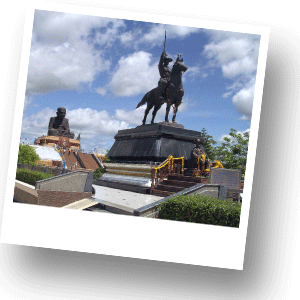
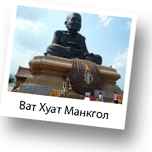
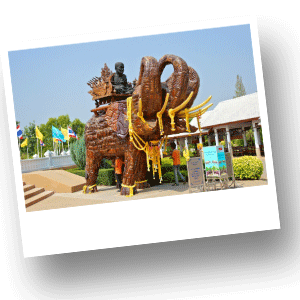

Ват Хуат Монкгол

Храм Ват Хуат Монкгол посвещен крупнейшему в мире изваянию монаха Луан По Туад (Laung Poo Tuad). Луанг По Туад является одним из известных и весьма почитаемых монахов буддийского Королевства. По легенде Луанг По Туад сотворил чудо, превратив морскую воду в пресную во время своего путешествие в один из монастырей Аюттхаи. Считается, что он имел сверхъестественные способности. Тайцы, имеющие веру в Луанг По Туад, твердо убеждены в том, что его святость обеспечивает защиту от несчастных случаев, пожаров и различных стихийных бедствий.
Статуя представлена в виде сидящего в позе лотуса монаха и имеет размер в ширину около 10 метров, а в высоту около 13 метров. С учетом постамента фигура монаха кажется гигантской. Скульптура была построена по случаю празднования дня рождения Ее Величества Королевы Сирикит 12 августа 2004 года. Доступ в храм открыт с 6.00 утра до 21.00 вечера. Вы обязательно должны увидеть эту самую крупную статую монаха во всем мире. Это место будет интересно всем без исключения, но в особенности тем, кто практикует или увлекается буддизмом.
 